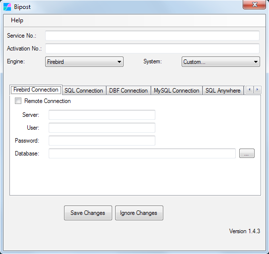
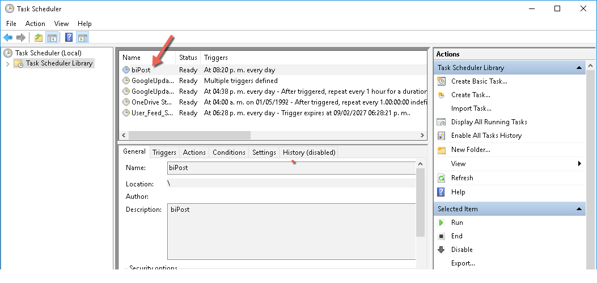

Microsip ERP¶
Integramos Microsip ERP con Amazon Web Services para crear tableros de mando, realizar análisis contable y fiscal y desarrollar soluciones a la medida.
Consolidamos también información de distintas sucursales que utilizan bases de datos separadas de Microsip, de razones sociales distintas y de la misma razón social (cuando no usas Replix).
Buscas un Business Intelligence? Visitanos! www.factorbi.com
Escríbemos y te ayudamos en lo que necesitas: info@factorbi.com
Casos de Uso¶
- Dashboards Punto de Venta, Ventas, Pedidos, Cotizaciones, Remisiones.
- Flujo de Efectivo + Cuentas por Cobrar + Cuentas por Pagar.
- Estados Financieros Gráficos.
- Consolidación de Empresas y Sucursales.
- Contabilidad Avanzada.
- Origen y Aplicación de Recursos.
- Tableros Compras e Inventarios.
Demo Business Intelligence¶
Tablero de Mando Ventas Microsip
Consolidación¶
Consolida información de Microsip de distintas razones sociales y sucursales que utilizan bases de datos independientes. Sube información de Excel como metas de ventas y presupuestos para realizar un análisis completo.
Excel Tablas Microsip¶
 Abre aquí Excel tablas Microsip.
Abre aquí Excel tablas Microsip.
NOTA: La lista del link anterior puede no estar completa.
Para obtener el listado completo de tablas de acuerdo a tu base de datos, puedes usar el siguiente query en Firebird:
select rdb$relation_name
from rdb$relations
where rdb$view_blr is null
and (rdb$system_flag is null or rdb$system_flag = 0)
order by rdb$relation_name;
Descarga el Programa de Sincronización¶
-
En tu servidor de Firebird crea una carpeta, por ejemplo C:\Bipost\ y copia los archivos.
Configura la Sincronización¶
La siguiente información es para Distribuidores Certificados de Factor BI.
Si eres usuario de Microsip por favor envíanos un correo y nos pondremos en contacto: info@factorbi.com
1. Llaves de sincronización¶
Entra a la Consola Factor BI y en el menú Service Numbers copia Service No. y Activation No. que correspondan con la base de datos a sincronizar.
2. Configura biPost¶
Abre biPost.exe y oprime Configuration.

- Service No.: Pega el texto que obtuviste de la consola.
- Activation No.: Pega el texto que obtuviste de la consola.
- Engine:
Firebird - System:
Custom...<-- IMPORTANTE usar este valor.
| Pestaña Firebird Connection | ||
|---|---|---|
| Remote Connection | Apagado | Activar SOLAMENTE cuando biPost.exe no está en el servidor de Firebird |
| Server | En blanco | Usar SOLAMENTE cuando Remote Connection está activado. Ingresar IP o nombre de red de la PC donde está el servidor Firebird. |
| User | Usuario Firebird | Por lo regular SYSDBA |
| Password | Contraseña del usuario | |
| Database | Ruta archivo FDB | Comúnmente C:\Datos Microsip |
3. Pestaña General Settings¶

- Activa Specific Bucket.
- Ingresa el texto que recibiste por email de Factor BI.
Oprime Save Changes.
Descarga Archivos de Sincronización¶
-
Para visualizar correctamente los archivos recomendamos utilizar Sublime Text.
-
Para validar un archivo JSON que modifiques, utiliza JSONLint.
Sincronización Primera Vez¶
-
Descomprime customData-Microsip.zip
-
Reemplaza el archivo customSchema.json en tu carpeta Bipost.
-
Abre customData-catalogos.json del ZIP copia y pega el contenido en customData.json
-
Abre biPost.exe y sincroniza con el botón Sync Now. Este proceso puede durar algunos minutos. Recibirás el mensaje Sync Completed cuando termine.
-
Repite los pasos 3 y 4 para los archivos (respetando el orden mostrado):
- customData-movimientos_CM_IN.json
- customData-movimientos_CO_NO.json
- customData-movimientos_PV.json
- customData-movimientos_VE.json
- customData-movimientos_BA_CC_CP.json
- customData-30dias.json
-
Agenda la sincronización diaria, ver siguiente sección 👇
Agenda¶
NOTA: Este proceso se realiza después de sincronizar por primera vez la base de datos.
-
Abre la carpeta donde colocaste Bipost, usualmente C:\Bipost.
-
Abre el archivo customData.json y verifica que el contenido es para sincronizar 30 días. Esto se puede ver rápidamente en alguna tabla como "ARTICULOS", ejemplo:
-
Abre biPost.exe en la pestaña Schedule

Oprime Configuration, establece el horario para sincronizar y oprime Schedule. Oprime Save Changes.
Se sugiere usar un horario después que la empresa termine sus operaciones, por ejemplo en la madrugada.
Lo anterior crea una tarea en el Programador de Tareas de Windows. Si requieres sincronizar más de una vez al día, ve al menú de Windows y abre "Programador de Tareas".
Seleccionar la primer carpeta del lado izquierdo y dar doble click a la tarea biPost.

En la pestaña Desencadenadores puedes crear más horarios: Nuevo \ Diariamente \ Inicio: establecer fecha y horario nuevo.
Tenant¶
Si vas a consolidar múltiples bases de datos de Microsip, por favor comunícate con nosotros para explicar el uso correcto de la opción tenant_id.
Contacto¶
쯅ecesitas ayuda? Escríbemos! info@factorbi.com